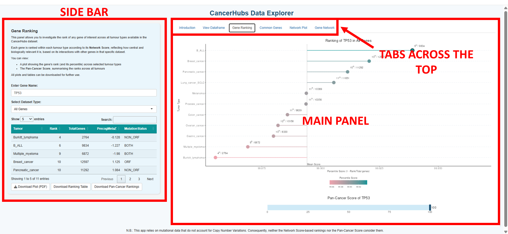
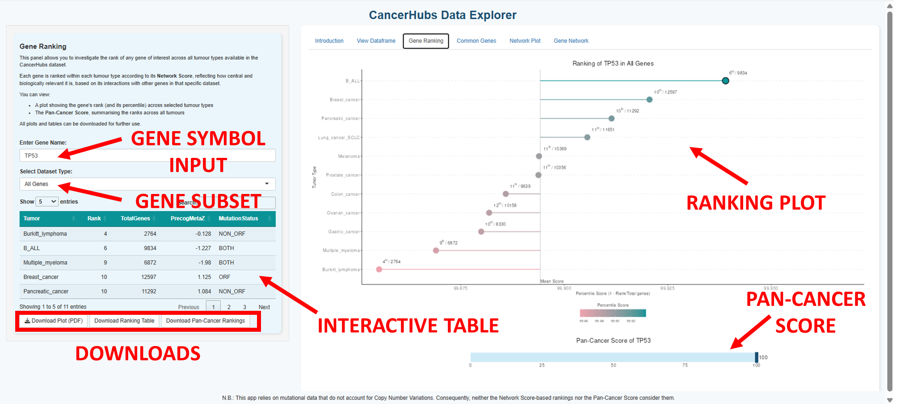
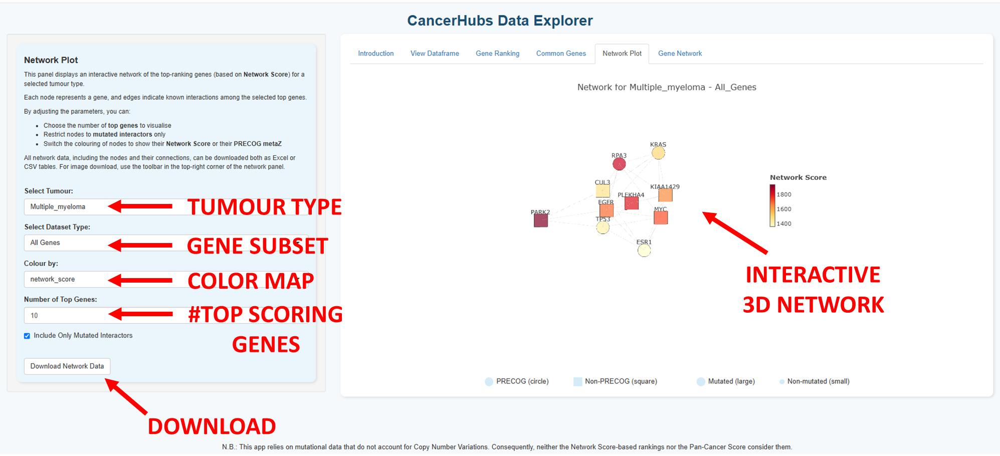
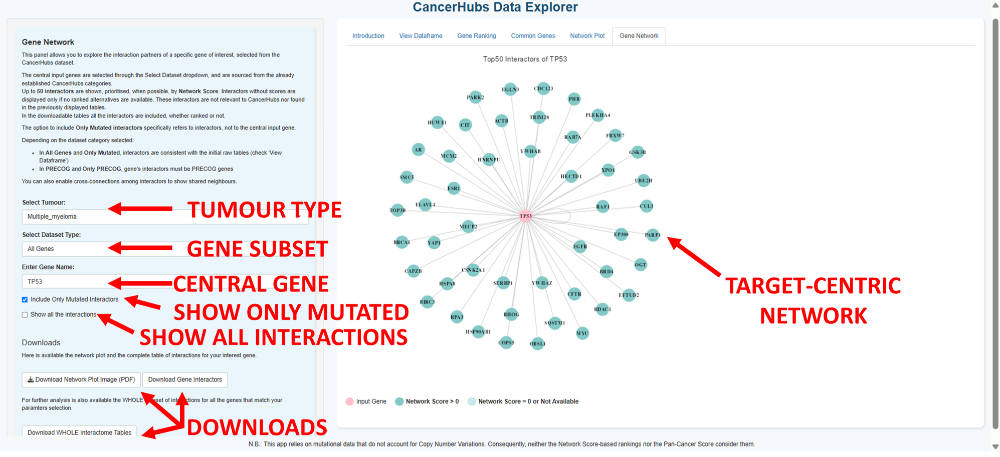

This guide provides a walkthrough for using the CancerHubs Data Explorer online. It explains how to navigate each tab of the web interface and retrieve data and images generated by the app.
The CancerHubs Data Explorer is an interactive Shiny web application for visualising the output of the CancerHubs framework—a network-based approach to identify and rank cancer-relevant genes by integrating mutational burden, gene expression-prognosis correlations (PRECOG), and protein interactomics.
Cancer is increasingly understood as a systems-level disease, not merely the result of individual gene alterations. Rather, it emerges from the coordinated disruption of functional gene modules within the interactome, often driven by network-central "hub" genes that orchestrate oncogenic processes. This insight motivates the shift from single-gene analyses toward network-informed prioritisation strategies.
To exploit this complexity, CancerHubs introduces the Network Score, a novel metric that captures the extent to which a gene's encoded protein is embedded in a network of mutated interactors. This score is computed by quantifying the proportion and absolute number of mutated partners in a tumour-specific interactome, allowing identification of potential cancer-driving hubs that may be overlooked by traditional mutation frequency or expression-based analyses.
The Data Explorer builds upon this foundation, offering an accessible platform to explore these hubs across 11 tumour types. Designed for both computational and experimental researchers, it supports layered, intuitive exploration of gene-level and network-level features without requiring programming expertise.
This method assigns a Network Score to each gene, defined as:
$$\text{Network Score} = \frac{(\#\ \text{Mutated Interactors})^2}{\#\ \text{Total Interactors}}$$
This score captures the extent to which a gene's encoded protein is embedded within networks of cancer-mutated interactors. High scores highlight potential mutated protein hubs involved in cancer pathogenesis.
Note that the Network Score does not take copy-number variations into account.
The CancerHubs Data Explorer is available online—no installation is necessary.All necessary data and packages are loaded automatically upon opening the website. Simply visit: https://cancerhubs.app/
The interface is divided into a sidebar (left) and a main panel (right).

Users can focus on different evidence-based gene categories:
How mutation status is defined: Any type of nucleotide substitution (including synonymous and non-coding changes) is considered. Genes are labelled based on where mutations fall: ORF (in coding regions), NON_ORF (non-coding regions), or BOTH. Thresholds for retaining mutated genes are adjusted based on mutation frequency and correlation with prognosis, as detailed in the CancerHubs pipeline.
How prognostic status is defined: Genes with meta-Z scores ≥ 1.96 or ≤ −1.96 are considered statistically significant (95% confidence). Scores ≥ 2.58 or ≤ −2.58 are considered highly significant (99% confidence), and are retained even if the gene is not mutated.
This panel allows users to explore tumour-specific gene tables used in the CancerHubs analysis. The screenshot above illustrates the key components of the interface:

Note: The application uses mutation data that does not account for copy number variations. Network Score rankings and pan-cancer comparisons do not consider CNVs.
This panel allows you to investigate the ranking of any gene of interest across tumour types, based on its Network Score. The figure above highlights the main features:

Note: The Pan-Cancer Score is obtained by converting each tumour-specific rank into 1 - (rank / total genes), summing these values across all tumours, and rescaling so the top-scoring gene reaches 100.
This panel helps identify genes that consistently rank among the top-scoring candidates across multiple tumour types. The interface includes:

This panel visualises the top-ranking genes in a selected tumour type as a 3D network based on known BioGRID interactions. Nodes represent genes, and edges represent direct protein–protein interactions. The interface elements are:

This panel allows users to explore the interactome neighbourhood of a specific gene of interest in a selected tumour context. The diagram presents a 2D radial layout of the selected gene (highlighted in pink) with up to 50 interactors arranged around it.

Note: The "Only Mutated Interactors" checkbox filters for genes with any type or number of mutations, matching the set used in the Network Score calculation. In contrast, selecting the PRECOG or Only PRECOG subsets restricts the displayed interactors to those identified as significant in the PRECOG database.
The app retrieves data directly from the main CancerHubs repository:
If you encounter any issues while using the app, refer to the table below:
| Problem | Solution |
|---|---|
| No results found | Ensure the gene symbol is valid and present in the dataset. |
| Slow network rendering | Reduce the number of genes or interactors displayed. |
| Page not loading correctly | Check your internet connection and refresh your browser. |
If you use this application in your work, please cite:
Ivan Ferrari, Federica De Grossi, Giancarlo Lai, Stefania Oliveto, Giorgia Deroma, Stefano Biffo, Nicola Manfrini. CancerHubs: a systematic data mining and elaboration approach for identifying novel cancer-related protein interaction hubs. Briefings in Bioinformatics, 2025. https://doi.org/10.1093/bib/bbae635
For assistance, contact the maintainers listed in the README file. Contributions are welcome via GitHub pull requests.
Last updated: 10/07/2025